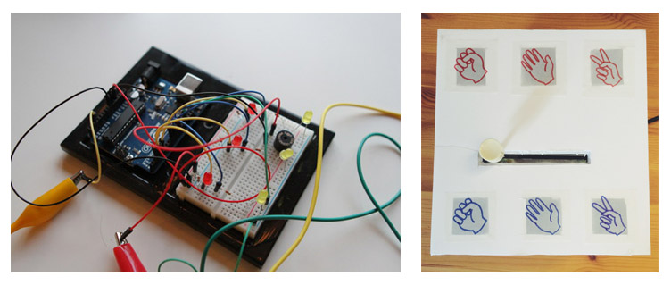
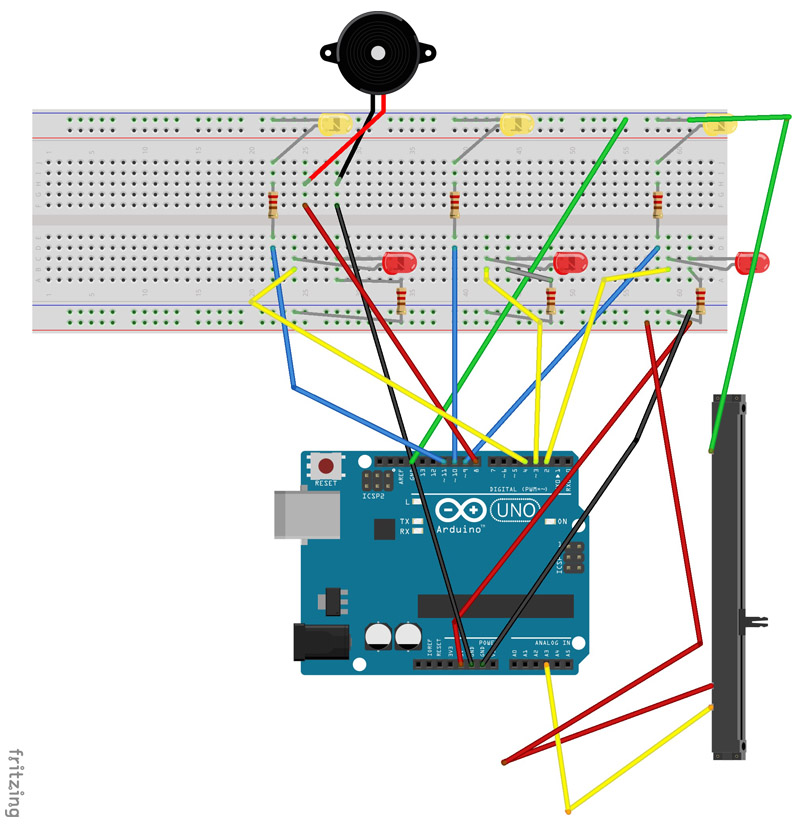

Rock-Paper-Scissors: Arduino Project
What if you could play Rock-Paper-Scissors against a machine?
For my first project with the Arduino, I wanted to explore usability as well as form, so I decided to work on a game. It had to be something that someone would instinctively know how to play once they approached it, without any sort of direction. This is what led me to recreate the classic childhood game, Rock-Paper-Scissors, using LEDs, a slide potentiometer and a piezo.
Since I was still new to programming at this time, I found that the best way to approach the project is to break down each of the individual components and work on getting those to function separately; however, that only got me so far. It turns out that bringing everything together is a bit more complicated than simply piecing the individual programs together. I had a major breakthrough once I discovered that I can create multiple states in the program. For my purposes, I only needed two, one that would run during the actual gameplay and another that would determine the results and let you know if you won, lost or tied. Once the wiring and programming were completed, I created a "shell" for the game to complete the prototype.
In the spirit of open-source, I’ve made my program available on GitHub and included a Fritzing diagram below for anyone interested in creating their own.
My Role
I wired, programmed and built the game from scratch with some help from the Arduino community and Pete Hawkes.
Methods
- Sketching
- Programming
- Breadboarding
- User testing
Tools
- Arduino UNO
- Fritzing
- Breadboard
- Wires
- LEDs
- Piezo
- Potentiometer
- GitHub